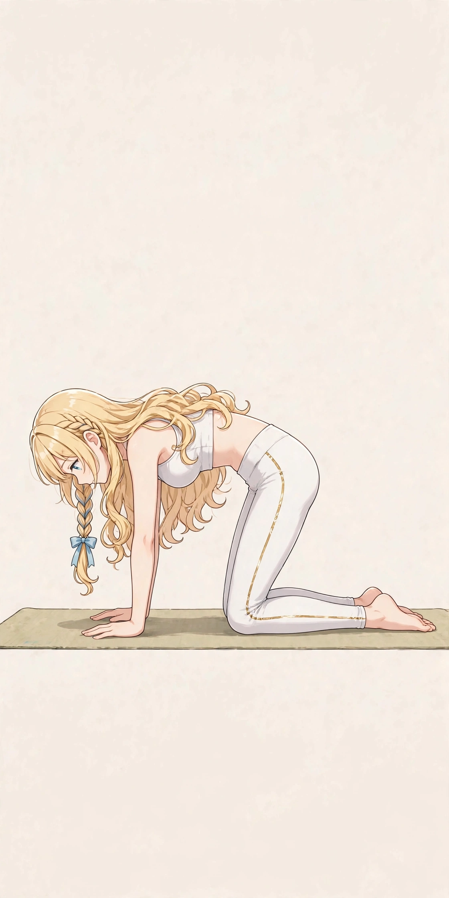
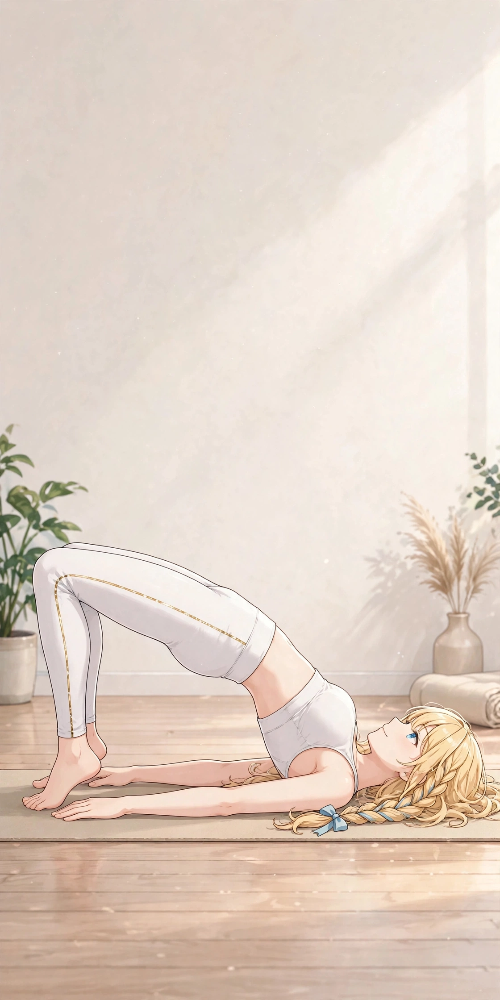

橋のポーズ

仰向けで腰を持ち上げるポーズです。脚の裏側と背中を使う感覚があり、レッスンの後半、寝位の流れの中でよく使われます。
ポーズのやり方
- マットに仰向けになり、両膝を曲げて足裏を床につけます。足幅は腰幅、かかとはお尻に近づけます。
- 両腕は体の横に伸ばし、手のひらを床へ向けます。
- 息を吸いながら、足裏で床を押して腰をゆっくり持ち上げます。肩から膝までが一直線になる高さが目安です。
- 太もも同士が開かないよう、両膝は腰幅を保ちます。あごは軽く引き、首は動かしません。
- 5〜10呼吸キープしたら、息を吐きながら背骨を上から順にゆっくり下ろします。
意識するポイント
- 足裏全体で床を押し、かかとが浮かないように
- 腰を持ち上げる高さよりも、脚の裏側で支える感覚を大切に
- 首を左右に動かさず、視線は天井に固定する
軽減法（初心者向け）
腰の下にヨガブロックやクッションを置いて支える形にすると、力を抜いてキープできます。高さは低めから始めてください。
注意点
首や肩に不調がある場合は行わないでください。腰に痛みが出る場合は高さを下げるか中止し、無理に持ち上げないでください。
こんな場面で
レッスン後半の寝位の流れや、シャバーサナの前の仕上げに。おうちヨガでは、1日の終わりの短いルーティンにも入れやすいポーズです。
体の土台を整える視点
背骨や骨盤まわりの土台を意識することは、整体の考え方とも重なります。骨格と巡りの両面から体を整える東三国の治療院「北辰堂」のサイトでも、姿勢や体の土台について紹介しています。
関連記事


あわせてチェック｜Simple Yoga Lifeのおすすめ
・特集：韓国ヨガウェア（ゼクシーミックス）…人気レギンスや上下セットを、楽天の実測価格とあわせて紹介しています
・セラフィナのスタンプ＆おうちヨガ用品コーナー…マットやブロックなどのおうちヨガ用品と、LINEスタンプをまとめています